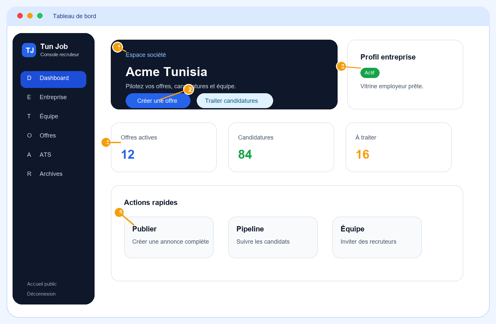

Tun Job
Guide recruteur
Manuel visuel, clair et professionnel de l’espace société Tun Job.

Guide prêt à joindre dans l’e-mail d’invitation recruteur.
Menu principal
Le menu principal est la colonne de navigation de l’espace recruteur. Il donne accès aux fonctions de pilotage, de publication et de suivi.
1Tableau de bordRésumé d’activité, indicateurs et actions rapides.
2EntrepriseFiche société, logo, informations publiques et contacts.
3ÉquipeInvitation des recruteurs et gestion des permissions.
4OffresCréation, publication, masquage et archivage des annonces.
5ATSTraitement des candidatures par étape.
6ArchivesHistorique des candidatures rejetées et offres terminées.
À quoi ça sert
- Aider l’utilisateur à se repérer.
- Séparer les fonctions importantes.
Boutons et actions
- Cliquer sur une rubrique
- Retour accueil public
- Déconnexion
Cas particuliers
- Certains menus peuvent dépendre des permissions accordées au recruteur.
Tableau de bord
Le tableau de bord donne une vision rapide de l’espace société : profil, offres, candidatures et raccourcis.
1Zone sociétéNom de la société et espace courant.
2Créer / traiterRaccourcis vers publication et ATS.
3Profil entrepriseÉtat de la vitrine employeur.
4IndicateursOffres actives, candidatures, dossiers à traiter.
5Actions rapidesAccès direct aux tâches fréquentes.
À quoi ça sert
- Comprendre l’activité en quelques secondes.
- Lancer rapidement les actions RH.
Boutons et actions
- Créer une offre
- Traiter candidatures
- Voir profil entreprise
- Gérer équipe
Cas particuliers
- Sans société configurée, un message invite à compléter le profil.
- Sans droit de publication, le bouton Créer une offre peut disparaître.
Profil entreprise
Le profil entreprise est la vitrine employeur. Il doit être complet avant une vraie campagne de recrutement.
1LogoAffiché sur les offres et la page société.
2ProgressionIndique les informations manquantes.
3Champs obligatoiresNom, ville, pays, e-mail RH, secteur.
4Public / privéContrôle la visibilité e-mail/téléphone.
5EnregistrerSauvegarde les modifications.
À quoi ça sert
- Rassurer les candidats.
- Présenter une société crédible.
- Centraliser les contacts RH.
Boutons et actions
- Ajouter logo
- Basculer Public/Privé
- Enregistrer
Cas particuliers
- Consultation seule si le recruteur n’a pas le droit Modifier entreprise.
- E-mail privé = non affiché aux candidats.
- Profil incomplet = confiance réduite.
Gestion de l’équipe
La gestion de l’équipe permet de travailler à plusieurs sans donner tous les droits à tout le monde.
1InviterAjoute un recruteur par e-mail.
2PermissionsDroits affichés sous forme de badges.
3ModifierChange poste, téléphone et permissions.
4RetirerSupprime l’accès du membre.
À quoi ça sert
- Collaborer entre RH et managers.
- Limiter les actions sensibles.
Boutons et actions
- Inviter un recruteur
- Modifier
- Retirer
- Envoyer invitation
Cas particuliers
- Seul le responsable peut gérer l’équipe.
- Sans droit Publier, impossible de créer une offre.
- Sans droit Candidatures, impossible de traiter l’ATS.
Gestion des offres
La page Offres pilote la visibilité des annonces et donne accès aux candidatures de chaque poste.
1Créer une offreOuvre le formulaire.
2Filtre statutAffiche les annonces selon leur état.
3Badge statutIndique Brouillon, Publiée ou Masquée.
4Actions offreModifier, publier, masquer ou archiver.
5CandidaturesOuvre l’ATS filtré sur l’offre.
À quoi ça sert
- Suivre toutes les annonces.
- Contrôler ce qui est visible publiquement.
Boutons et actions
- Modifier
- Candidatures
- Publier
- Masquer
- Archiver
Cas particuliers
- Brouillon = interne.
- Publiée = visible candidats.
- Masquée = retirée temporairement.
- Expirée = arrêt automatique.
Créer ou modifier une offre
Le formulaire doit aider le recruteur à produire une annonce claire, complète et attractive.
1Infos posteTitre, contrat, mode, lieu, date, salaire.
2DescriptionMissions, contexte, équipe, responsabilités.
3Profil recherchéCompétences, diplômes et expérience.
4Skills / languesMots-clés utiles aux candidats.
5Quiz optionnelDeux questions de préqualification.
6PublierEnregistre l’annonce.
À quoi ça sert
- Créer une annonce de qualité.
- Améliorer la pertinence des candidatures.
Boutons et actions
- Ajouter +
- Activer quiz
- Configurer quiz
- Publier offre
- Mettre à jour
Cas particuliers
- Statut Brouillon = non public.
- Statut Publiée = visible selon les droits de publication.
- Offre expirée = visibilité bloquée.
- Quiz optionnel mais utile pour filtrer.
ATS - suivi des candidatures
L’ATS sert à traiter les candidats comme un pipeline. Il permet de suivre chaque candidature depuis la réception jusqu’à la décision.
1Kanban / ListeChange le mode d’affichage.
2ColonnesÉtapes du recrutement.
3Carte candidatRésumé du profil.
4ProfilDétail du candidat.
5CVOuverture du CV protégé.
6DéplacementPassage d’une étape à une autre.
À quoi ça sert
- Centraliser les candidatures.
- Avancer les profils étape par étape.
Boutons et actions
- Profil
- CV
- Changer étape
- Filtrer par offre
- Tout afficher
Cas particuliers
- Vue liste recommandée sur mobile.
- Rejet = archivage automatique.
- Changer étape exige le droit Traiter candidatures.
Notifications et archives
Les notifications alertent les recruteurs. Les archives gardent l’historique sans encombrer l’espace actif.
1CompteurNombre de notifications non lues.
2NotificationNouvelle candidature ou événement.
3Voir candidaturesAccès direct à l’ATS.
4Résumé archivesNombre d’éléments archivés.
5Éléments archivésCandidatures rejetées et offres expirées.
À quoi ça sert
- Réagir vite aux nouvelles candidatures.
- Conserver un historique propre.
Boutons et actions
- Tout marquer lu
- Voir candidature
- Voir offre
- Restaurer
- Supprimer
Cas particuliers
- Candidature rejetée = archive automatique.
- Restaurer remet dans le flux si possible.
- Supprimer retire de l’historique recruteur.
Cas particuliers importants
| Cas | Ce qui se passe | Action conseillée |
|---|
| Profil entreprise incomplet | Message de blocage ou fonctionnalités limitées. | Compléter la fiche Entreprise puis enregistrer. |
| Pas de permission Publier | Bouton Créer/Publier caché ou désactivé. | Demander au responsable société d’ajouter le droit. |
| Pas de permission ATS | Impossible de traiter ou changer les étapes. | Ajouter le droit Traiter candidatures. |
| Offre expirée | L’annonce n’est plus publique automatiquement. | Créer une nouvelle offre ou restaurer si possible. |
| Profil en consultation seule | Les champs entreprise ne sont pas modifiables. | Demander le droit Modifier entreprise au responsable société. |
| Candidature rejetée | Elle sort du pipeline actif et passe dans les archives. | La restaurer depuis Archives si nécessaire. |
Bonnes pratiques
Compléter la fiche entreprise avant la première annonce.
Utiliser un titre précis : poste + niveau + spécialité.
Indiquer contrat, lieu, télétravail, salaire ou fourchette si possible.
Décrire clairement les missions, l’équipe et les attentes.
Ajouter skills, langues et avantages pour rendre l’offre attractive.
Traiter les candidatures régulièrement dans l’ATS.
Archiver les offres terminées pour garder une interface propre.
Limiter les permissions selon les responsabilités réelles.
Message support recommandé
En cas de difficulté, le recruteur peut répondre à l’e-mail d’invitation avec une capture du message affiché. L’administrateur pourra vérifier le profil entreprise, les permissions et l’état des offres.